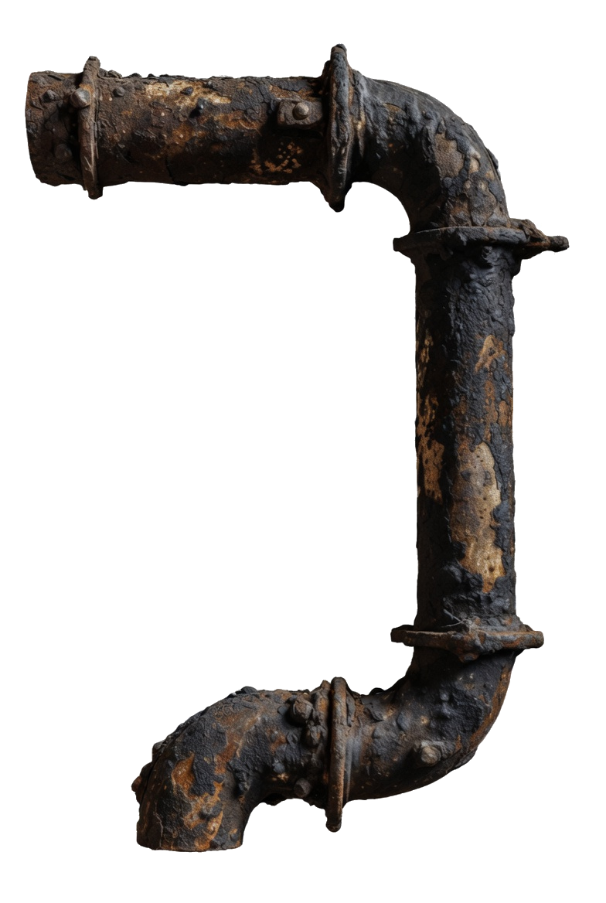
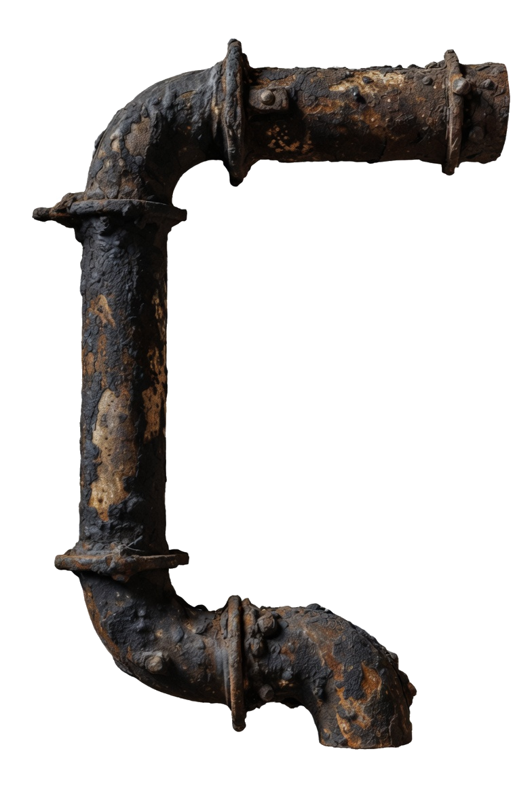
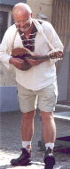
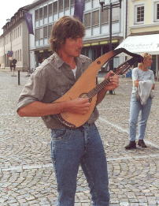
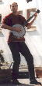
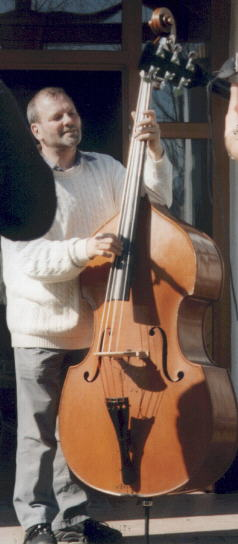
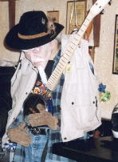

Die Musiker
Die Fotos stammen aus jungen Jahren der Musiker. Wollt ihr uns alte Zossen live erleben dürft ihr auf gar keinen Fall unsere Termine verpassen.
|
Monika – Fiddle, Geige, Violine. Inzwischen teuflisch schnell! |
 Nefti – Paradiesvogel,mit Mandoline, Flöte und Überraschungen. |
 Jan – Gitarre & Mandoline,gelegentlich auch Dudelsack oder „Tröt“. |
|
 Markus – Banjo-Virtuose,schneller als sein eigener Schatten. |
 Bernhard – Kontrabass,zu Hause auf vielen Bühnen. |
 Krubutz – Wilder Hund,kommt wenn er will – und rockt den Laden. |